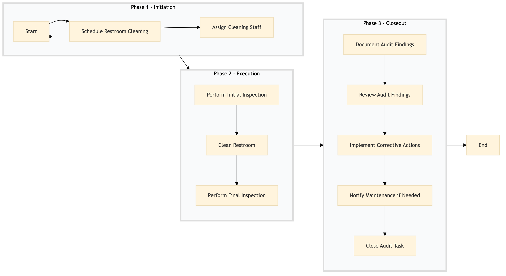

| Role | Steps |
|---|---|
| Housekeeping Supervisor | 1.1 1.2 3.1 3.2 3.3 3.4 3.5 |
| Housekeeping Staff | 2.1 2.2 2.3 |
| Step | Name | Role | System | Input | Output | KPI | Dec? | Exc? | Pain Point / Risk |
|---|---|---|---|---|---|---|---|---|---|
| 1.1 | Schedule Restroom Cleaning | Housekeeping Supervisor | Oracle OPERA Cloud | Cleaning schedule template | Scheduled cleaning tasks in Oracle OPERA Cloud | Less than 5 min per task scheduling | N | Y | Scheduling conflicts with other maintenance tasks |
| 1.2 | Assign Cleaning Staff | Housekeeping Supervisor | Oracle OPERA Cloud | Scheduled cleaning tasks | Assigned staff in Oracle OPERA Cloud | Less than 3 min per task assignment | N | Y | Insufficient staffing for all scheduled tasks |
| 2.1 | Perform Initial Inspection | Housekeeping Staff | Oracle OPERA Cloud | Scheduled cleaning task list | Initial inspection report in Oracle OPERA Cloud | Less than 2 min per restroom | N | Y | Difficult-to-access areas or hidden issues |
| 2.2 | Clean Restroom | Housekeeping Staff | Oracle OPERA Cloud | Cleaning checklist | Cleaned restroom and updated status in Oracle OPERA Cloud | Less than 10 min per restroom | N | Y | Supply shortages or equipment malfunctions |
| 2.3 | Perform Final Inspection | Housekeeping Staff | Oracle OPERA Cloud | Cleaned restroom and checklist | Final inspection report in Oracle OPERA Cloud | Less than 2 min per restroom | N | Y | Guest complaints or unexpected issues |
| 3.1 | Document Audit Findings | Housekeeping Supervisor | Oracle OPERA Cloud | Inspection reports | Audit findings document in Oracle OPERA Cloud | Less than 5 min per restroom | N | Y | Complex issues requiring detailed documentation |
| 3.2 | Review Audit Findings | Housekeeping Supervisor | Oracle OPERA Cloud | Audit findings document | Action plan in Oracle OPERA Cloud | Less than 10 min per restroom | Y | N | High number of recurring issues |
| 3.3 | Implement Corrective Actions | Housekeeping Supervisor | Oracle OPERA Cloud | Action plan | Updated cleaning schedule and inventory in Oracle OPERA Cloud | Less than 15 min per restroom | N | Y | Resource allocation for corrective actions |
| 3.4 | Notify Maintenance if Needed | Housekeeping Supervisor | Oracle OPERA Cloud, Knowcross HotSOS | Action plan | Work order in Knowcross HotSOS | Less than 5 min per issue | Y | N | Delays in maintenance response |
| 3.5 | Close Audit Task | Housekeeping Supervisor | Oracle OPERA Cloud | Action plan and work order status | Closed audit task in Oracle OPERA Cloud | Less than 2 min per restroom | N | Y | Incomplete or incorrect documentation |
HK-PC-05 Public Restroom Cleaning & Audit process ensures that public restrooms in a Marriott full-service hotel are cleaned and inspected regularly to maintain high standards of hygiene and guest satisfaction.